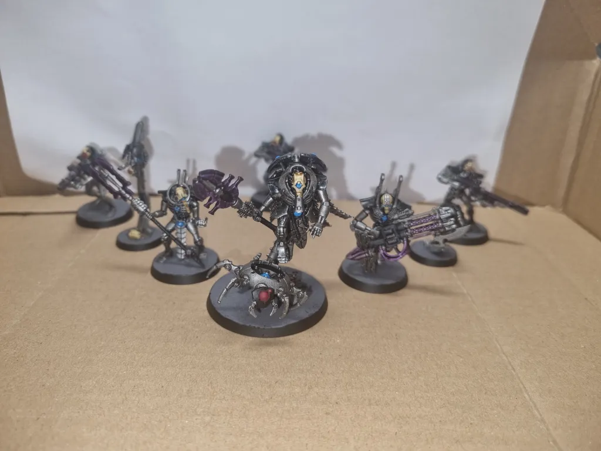

Kill Team ·
Rise of the Machine – Hierotek Circle Rises to the Challenge
What started as a relatively simple project turned out to be one of the harder ones I’d taken on. The paint job was straightforward, but assembling the miniatures gave me plenty of trouble. After this, I can safely say the Immortal and Deathmark kits are among my least favourite to build.


Meet the operatives
Technomancer HC CTE1000
One of my favourite models so far, even if assembling the spider was fiddlier than I’d have liked.


Apprentek HC CTA 500
I misaligned the ring that holds the head, so it never seated properly. A stiff breeze can send it rolling off. Still, I like the pose and the colour shifts on the weapon.


Despotek HC CTD 600
I hate, hate, hate the Immortal kit. I never manage to line up the power cord, the weapon arms refuse to stay in place, and the parts take a lot of force to fit together.


Plasmacyte Reanimator HC CPR 300
Surprisingly quick and easy to put together. I really like the pose, and the skull on the base makes the rest of the model pop.


Plasmacyte Accelerator HC CPA 300
A quick, easy build. I used it to test my paint scheme, though I don’t think you can tell from the finished model.


Deathmark HC TD 601
The Deathmark was much easier to build than the Immortals, though some parts still wouldn’t line up. The lightning effect looked good at first. An hour later, the excess paint had spread into a pattern I didn’t like.


Deathmark HC TD 602
Probably my favourite Deathmark. I would have liked more posing options, but I’m still building up the confidence to make major modifications.


Deathmark HC TD 603
So close to perfect. My hand shook a little, and after three attempts to clean it up, I called it done.


The Necron forces assemble
My Necron forces are coming together quickly and will soon reach 1,000 points. I’m looking forward to it. My human defenders, on the other hand, seem a bit overwhelmed right now.